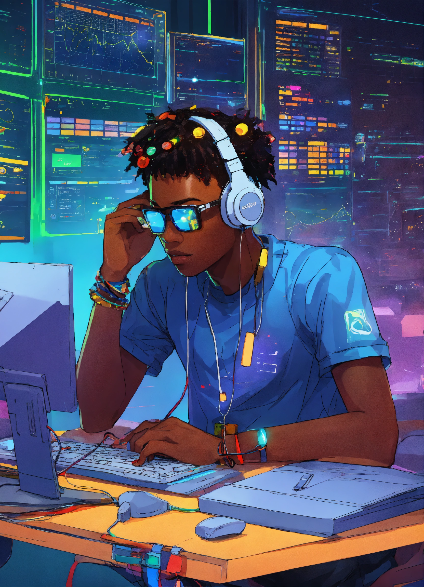

Qui suis-je ?
Je suis Emmanuel BAGUEMZANRE un passionné de développement web, toujours en quête d'authenticité dans tout ce que je crée. Mon parcours est guidé par la curiosité, la rigueur et un profond désir d’apprendre en continu. Ce qui m’anime, c’est la possibilité de transformer des idées en solutions concrètes, accessibles et impactantes. Pour moi, un bon site web ne se limite pas à l’aspect visuel : il doit raconter une histoire, refléter une identité et offrir une expérience fluide à chaque utilisateur. Je m’efforce donc de concevoir des interfaces modernes, intuitives et performantes, tout en respectant les bonnes pratiques du web. Chaque projet est pour moi l’occasion d’explorer de nouvelles technologies, de repousser mes limites et d’apporter une touche personnelle. Que ce soit à travers des animations subtiles, des effets de flou élégants ou un code propre et réutilisable, je m'engage toujours à produire un travail de qualité, centré sur l’utilisateur. Si je devais résumer ma vision du développement web en une phrase : créer avec sens, coder avec passion, et innover avec simplicité.
Parcours académique
Étudiant en informatique, j’ai développé mes compétences à travers des projets concrets, des travaux universitaires et de l’autoformation.
Expérience personnelle
Création de sites web, apprentissage de l’UI/UX design, découverte des technologies modernes du web et passion pour l’automatisation.
Vision & valeurs
Je crois que chaque ligne de code peut avoir une âme, chaque site peut raconter une histoire. Je valorise l’authenticité, la simplicité et l’impact.
CONCEPTION WEB
Votre Partenaire pour Donner Vie à Vos Projets Web En tant que développeur web freelance passionné, j’apporte une combinaison unique de créativité et de savoir-faire technique à chaque projet. Avec un œil attentif pour le design et le souci d’une expérience utilisateur fluide, je collabore étroitement avec mes clients pour comprendre leurs besoins et transformer leurs idées en réalité.
Des solutions de développement sur-mesure, conçues pour s’adapter parfaitement à vos besoins et offrir une expérience utilisateur fluide et sans accroc.
